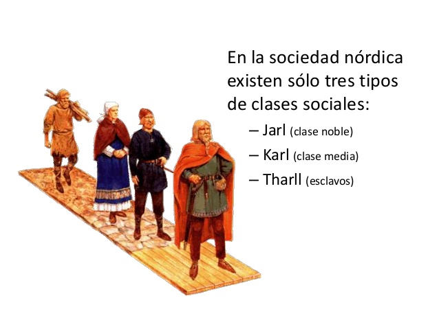
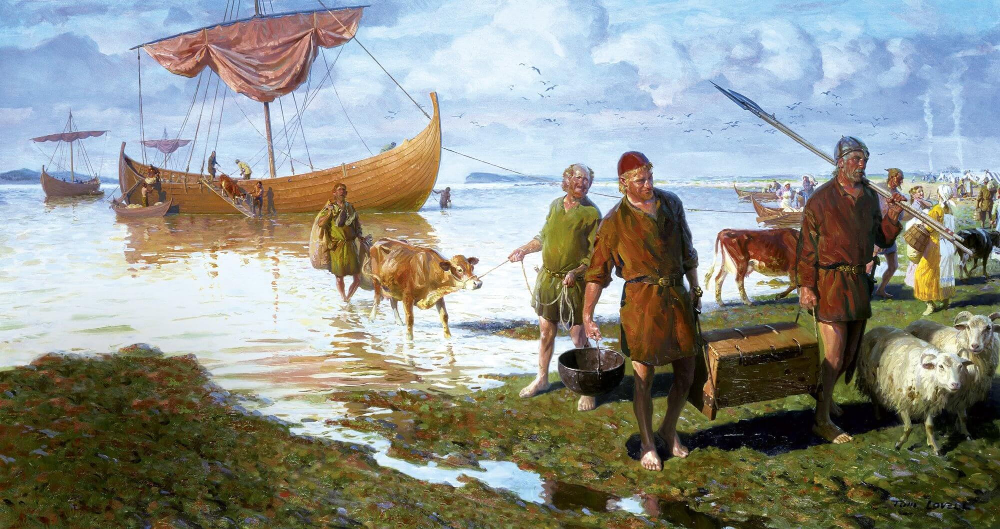
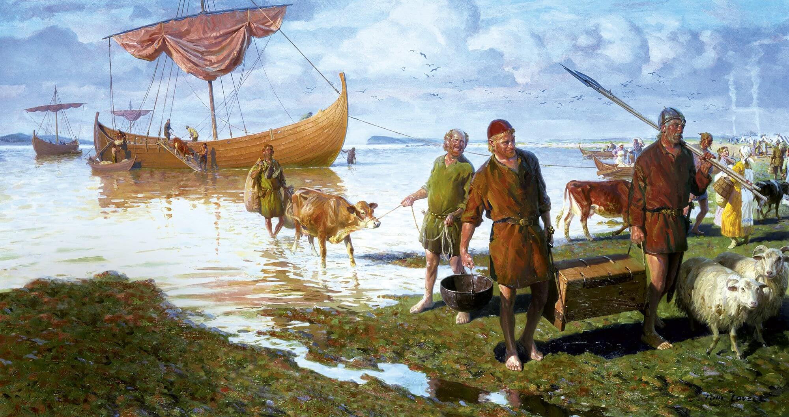

La civilización vikinga prosperó del siglo 8 al 11, en el período medieval europeo. La red de comercio vikinga comprendió desde Irak hasta el Círculo Polar ártico y recuentos de sus víctimas pintan una imagen vívida de sus saqueos. Sin embargo, más allá de estas descripciones imparciales los historiadores modernos saben bastante poco sobre los vikingos y las costumbres vikingas. Está surgiendo nueva evidencia arqueológica que explica más acerca de la cultura vikinga.
La conversión al cristianismo de los escandinavos empezó antes de la era vikinga. Esta transición continuó durante el asentamiento vikingo en Gran Bretaña. En ese momento la conversión religiosa era necesaria para establecer el comercio y mantener la paz con los habitantes nativos. Como resultado, las prácticas cristianas y las creencias paganas se influenciaron unas a otras en la cultura y las costumbres vikingas. Por ejemplo, los símbolos paganos y cristianos aparecían en las mismas monedas que circulaban en York. Las tradiciones religiosas vikingas incluían rituales de sacrificio humano y de animales, particularmente durante rituales funerarios. También veneraban a una gran variedad de dioses y diosas y creían en la vida después de la muerte y del fin del mundo
La sociedad vikinga estaba muy estratificada y estaba compuesta por tres clases sociales. Primero, los esclavos: también conocidos como servidumbre. Segundo, una clase media de personas libres. Y tercero, los jaris, que constituían la aristocracia vikinga. La clase media podía trabajar el metal o dedicarse a la agricultura, aunque los poetas también eran miembros valorados de la sociedad. Las mujeres vikingas libres eran responsables por el cuidado del hogar y el ganado. Además, podían heredar propiedades y divorciarse, y tenían mucho poder en el hogar, lo que estaba representado en la posesión de las llaves de su casa.
 

La navegación era una de las partes más importantes de la cultura vikinga: estaban dentro de los mejores constructores de barcos de Europa. Los artesanos que construían los drakkar (barco vikingo) de saqueo tenían tal destreza que podían construir barcos sin necesidad de fabricar la estructura primero. Durante la época medieval, los escandinavos construían distintos tipos de barcos de saqueo y de comercio, todos más rápido y de mejor calidad que los europeos. Los barcos vikingos eran tan preciados que muchos eran enterrados con sus dueños.
Las costumbres vikingas funerarias eran similares a las tradiciones egipcias en lo que a la inclusión de objetos de los fallecidos en sus tumbas respecta. Los aristócratas escandinavos eran enterrados en sus mejores ropas con joyas, comida, tapices y, a veces, esclavos y animales sacrificados para servirlos en la vida después de la muerte. El reporte de un testigo describe un vikingo de clase alta cuyos restos fueron colocados en un barco que había sido arrastrado hasta la orilla y, luego, era prendido fuego. También se han descubierto tumbas con vikingos enterrados con sus barcos llenos de productos lujosos.